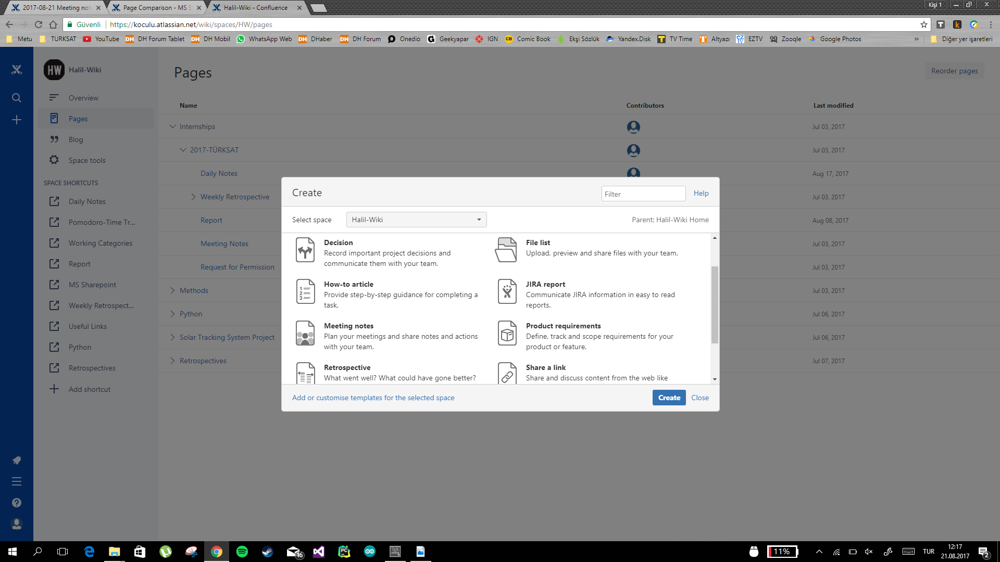
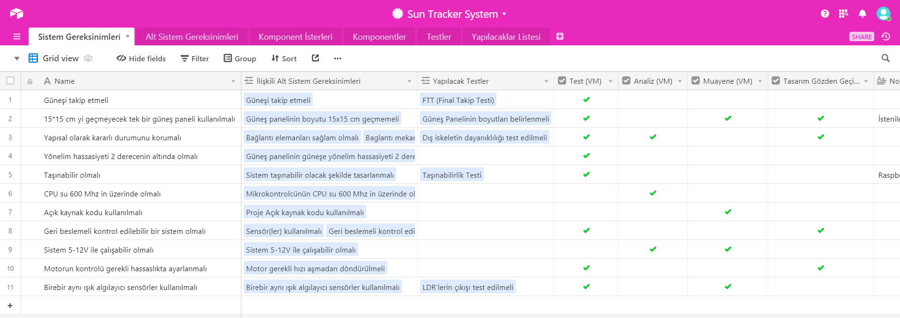
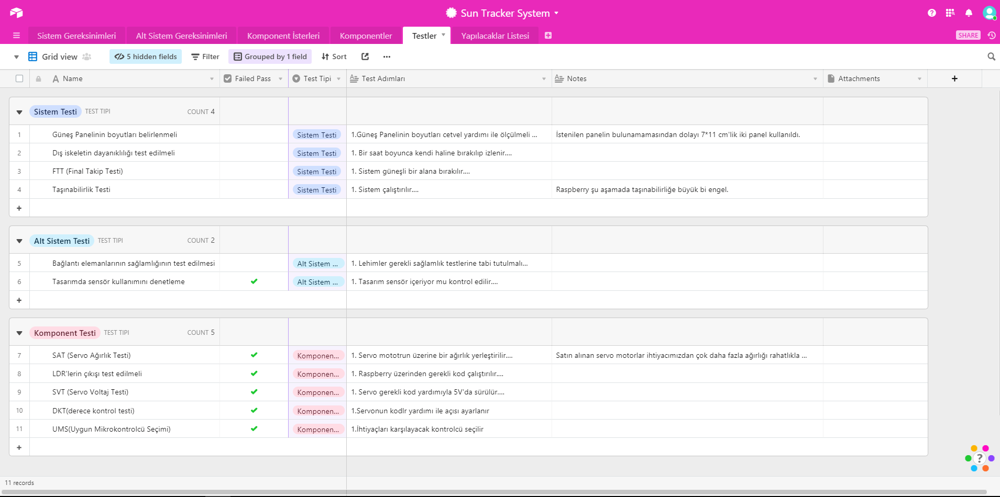

Halil-Wiki : 2017-08-21 Meeting notes
Created by Halil Temurtaş, last modified on Aug 21, 2017
Date
Attendees
Goals
- Rapor işlerinin tamamlanması
Discussion items
Action items
-
- V model Airtable bağlantısı
- Database ve Wiki kısımları rewrite edilecek
- 4.1.1
- VM
- test
- analiz - gereksinimin doğrulanması için analiz edilip edilemeyeceğini gösterir
- tasarım gözden deçirme
- muayne
- 4.4.2.3
- panel eri bağlandı
- usb üzerinden tel şarj edilmeye çalışıldı
- 5.2.2 ekran görüntüleri atılacak
- öncesinde özet
- meta data vs.
- Conclusion yazılacak
- s
- Figure XX kısımları ref ile değişecek with Ctrl+F
- Contact info değişecek Halil Temurtaş
- İlk Sayfaya tarih girilecek
- 3.4.2.1 roller açıklanacak
- Wiki ana sayfası ekleme sekmesi ile ss
- 
- Page history yapılıp ekrarn görüntüsü alınabili
- 3.2.1 airtable dan bir ekran görüntüsü konacak
- Görüntü üzerinde base tablo records fields gösterilecek
- Gerekli paragraf ile bağlantı kurulacak.
- 3. Sayfaya son paragraf eklenecek
- Raporun içeriğinde neler yazdım (~conculusion)
- Bitbucket ss 3.5.2
- Roller 4.2 den 4.1 e çekilecek
- 4.1.1 güncellenecek
- 
-
- 4.1.4 güncellenecek
- 4.2.2 den itibaren working for the project
- 4.4.1
- pcb üzerine çalışma devam etmedi
- taha dan 3d çizimleristenecek
- 4.5 tek görsele ve tek başlığa indirgenecek
- 
- 4.6
- 4.6.1 kanban anlatılacak
- 4.6.2 project tracking
-
- referanslar düzenlenecek
{kind=link}
{kind=link}
{kind=link}
{kind=link}
{kind=link}
{kind=link}
{kind=link}
{kind=link}
{kind=link}